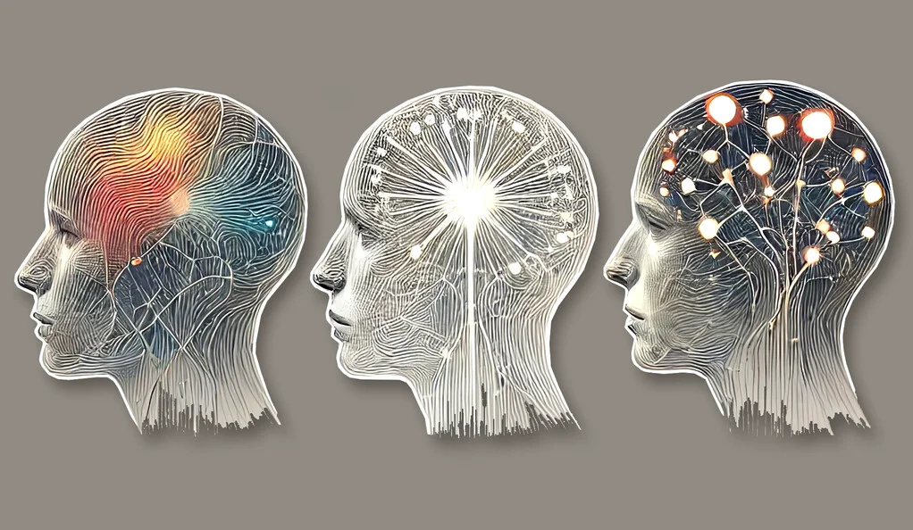
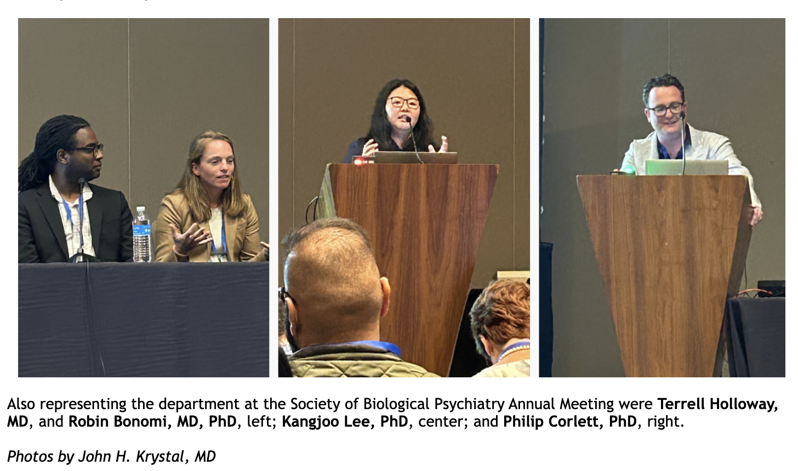
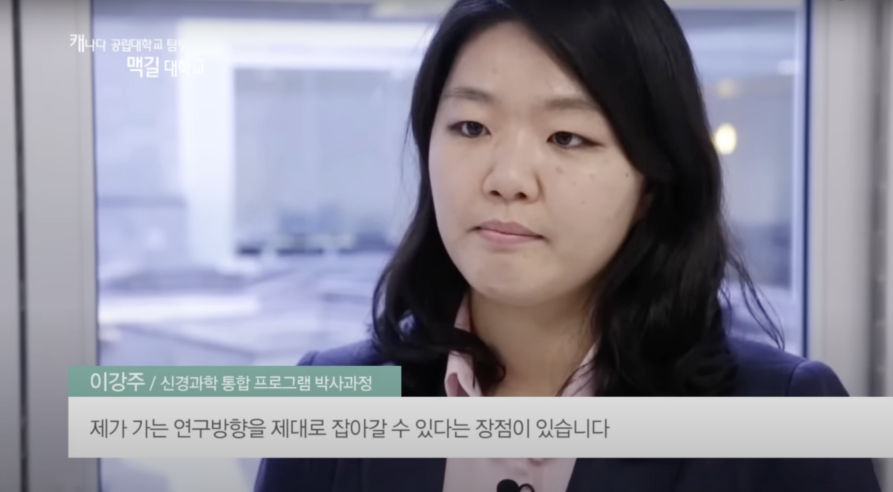

About Me | Research | Publications | Other Interests
Kangjoo Lee, Ph.D.
I am a computational neuroscientist based in multidisciplinary research teams at Yale Psychiatry, working as an associate research scientist. My current work involves developing advanced mathematical analysis methods for multimodal neuroimaging and neuroimaging-based markers of neurological and psychiatric illnesses to aid in early risk detection and individualized treatment planning. I consult for Manifest Technologies, Inc., USA.
Division of Neurocognition, Neurocomputation & Neurogenetics (N3)
Department of Psychiatry
Yale University School of Medicine
Address: Room 690, Suite 6E, 40 Temple Street, New Haven, CT 06510
Contact: Email Me
Latest News
(2024) Kangjoo Lee et al. Human brain state dynamics are highly reproducible and associated with neural and behavioral features has been published in PLOS Biology.
(2024) A co-authored abstract Clara Fonteneau et al. "Characterizing Reproducible Brain-Behavioral Association Models in Clinical High Risk for Psychosis" has been accepted as poster presentation in the 63rd Annual Meeting of the American College of Neuropsychopharmacology (ACNP, December 2024).
(2024) Two co-authored abstracts Dascal et al. "Whole Brain Profile of Hub Disruption in Frontal Lobe and Mesial Temporal Lobe Epilepsy" have been accepted as poster presentations in American Epilepsy Society (AES, December 2024) and Canadien League Against Epilepsy (CLAE, October 2024).
(2024) Kangjoo Lee and Valentina Borghesani et al., Brain Mappers of Tomorrow: an international multilingual initiative for neuroscience dissemination has been published in Aperture Neuro.
(2024) A co-authored article Makoto Uji et al. EEG source imaging technique to investigate sleep oscillations for simultaneous EEG-fMRI is now on bioRxiv.
(2024) I will give a talk about "Reorganization of connector hubs of brain networks during epilepsy and sleep" at the "Clinical investigator workshop: Multimodal evaluation of the interactions between sleep, epilepsy and cognition", AES 2024.
(2024) Our preprint Kangjoo Lee* and Yimeng Wang* et al. NREM sleep brain networks modulate cognitive recovery from sleep deprivation is now on bioRxiv.
(2024) Our OHBM 2024 Symposia: Brain State and Trait Dynamics in Mental Illnesses (Lead organizer) has been selected and I gave a talk about Kangjoo Lee et al. (In Press) at OHBM 2024.
(2024) I gave a talk about "Multilingual science communication" at the OHBM Educational course: Communicating Neuroscience across peoples, languages, and cultures at OHBM 2024.
(2024) A co-authored article Kam and Badhwar et al. Creating diverse and inclusive scientific practices for research datasets and dissemination has been published in Imaging Neuroscience.
(2024) I gave a talk about Kangjoo Lee et al. (In Press) at the "Clinical Applications of Precision Imaging" Symposium at SOBP, May 11, 2024.
(2024) I gave a poster presentation about Kangjoo Lee et al., Symptom Severity of Sample Population Impacts the Reproducibility of Neuro-Symptom Relationship in Psychosis at SOBP, May 10, 2024.
(2024) A co-authored article Luo et al. Large language models surpass human experts in predicting neuroscience results is now on arXiv.
(2024) Our OHBM 2024 Symposia: Diversity, Equity, and Inclusivity in Artificial Intelligence and Neuroimaging (Lead organizer) has been selected.
(2024) Our abstract Kangjoo Lee et al., "Non-linear Impact of Symptom Severity on Effect Size of Neuro-Symptom Variations in Psychosis" has been accepted for poster presentation at OHBM 2024.
(2023) A co-authored research Berkovitch et al. A common symptom geometry of mood improvement under sertraline and placebo associated with distinct neural patterns is now on medRxiv.
Media
- 09/24/2024 Kangjoo's recent neuroimaging study on the human brain and individual differences has been featured on Yale Press Biomarkers for psychiatric illness? Study gets researchers one step closer. 
- 06/11/2024 Kangjoo was featured in @Yale Psychiatry, the monthly newsletter of the Department of Psychiatry at Yale University School of Medicine, for her presentation at the SOBP 2024 conference. 
- 11/03/2015 Kangjoo was interviewed by EBS, which filmed the Integrated Program in Neuroscience at McGill. YouTube Video 